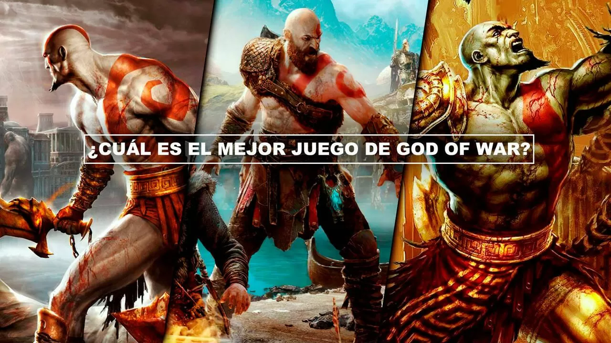
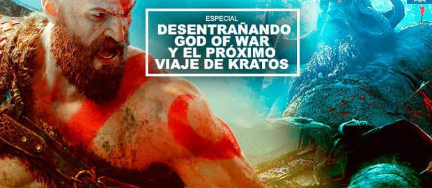
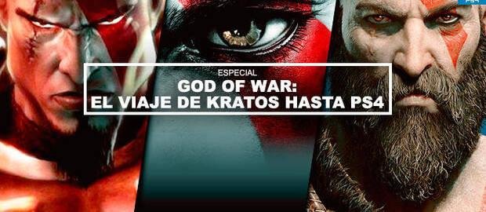
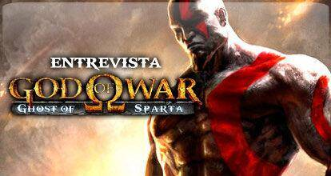

ÚLTIMOS REPORTAJES

Santa Monica Studio ha sido durante casi 20 años un sinónimo de God of War. Han producido juegos independientes y parece que en un futuro veremos algo completamente nuevo por parte del mismo equipo, pero su nombre siempre estará ligado a uno de los antihéroes favoritos de PlayStation: Kratos, el espartano que salvó su vida a cambio de cumplir los favores de los dioses, un trato que con el tiempo enfrentaría al personaje con casi todo el Olimpo. Después de seis juegos la mitología griega se quedó pequeña y sus pasos lo llevan ahora a enfrentarse a los dioses y criaturas de la mitología nórdica, una secuela que reinicia aspectos jugables y plantea un aire fresco en la historia. En este artículo vamos a clasificar, de manera personal, cuáles son los mejores juegos de God of War que en 2022 recibirá un nuevo episodio, llamado popularmente God of War: Ragnarok.

Desvelamos todas las claves argumentales de la última aventura de Kratos y recolectamos pistas, guiños y abrimos los libros de mitología para dibujar el argumento de la próxima entrega.

La "mascota" de PlayStation ha ido variando según la época, ya que nunca se ha oficializado una. Si en 32 bits se consideró a Crash Bandicoot y en la última década a Sackboy –LittleBigPlanet-, en los 128 bits de PlayStation 2 sería un antihéroe de malas pulgas bastante alejado de los animales y personajes más cariñosos: Kratos de God of War.

Ru Weerasuriya es vicepresidente y cofundador de Ready at Dawn, un estudio con siete años de historia en los que ha firmado tres juegos de PSP que han obtenido excelente acogida entre el público y la crítica: Daxter (más de cuatro millones de unidades vendidas), God of War: Chains of Olympus y, ahora, God of War: Ghost of Sparta. En una visita a Madrid pudimos hablar con él sobre lo que tiene para ofrecernos la portátil de Sony sobre la vida y obra de Kratos.